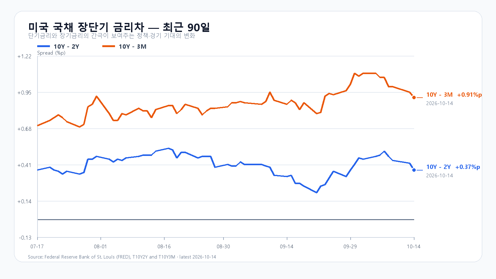
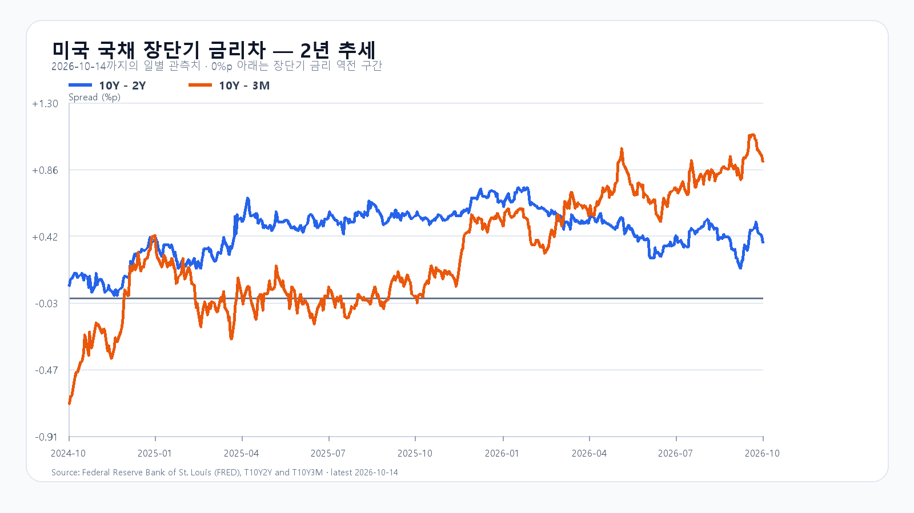

밤사이 미국 물가가 다시 높아지자 반도체주가 함께 밀렸다. 9월 CPI는 전년 대비 3.7%, 전월 대비 0.6% 상승했다. SOXX는 4.50%, SMH는 3.98% 하락했고 Nvidia·AMD·Micron·Broadcom도 모두 내렸다. 전일 서울장 마감 뒤 나온 물가 발표가 오늘 국내 반도체주에 새 부담을 더한다.
물가 부담이 메모리 밖으로 번졌다
전날까지는 중국 메모리 경쟁 우려가 매도의 중심이었다. 이번에는 AMD가 5.73%, Nvidia가 3.16% 하락하며 비메모리주도 흔들렸다. 높은 물가가 금리 인하 기대를 약하게 만들면, 미래 이익에 높은 값을 지불해 온 AI 주식과 자금 조달이 필요한 데이터센터 투자가 함께 압박받는다.
물가의 내부 구성도 봐야 한다. 에너지 가격은 한 달 새 5.2% 올랐지만 식품·에너지를 뺀 근원 CPI는 전월 대비 0.3%, 전년 대비 2.6% 상승했다. 에너지발 충격과 기조적인 물가 압력을 구분할 필요가 있다. 미 노동통계국 CPI의 발표값이다.
설비와 메모리 수요는 주가와 다른 속도로 움직인다
ASML의 3분기 매출은 117억유로, 순이익은 50억유로였다. 회사는 올해 매출 전망을 440억~450억유로로 제시했다. 반도체 설비 수요가 버티고 있다는 근거다. 그렇다고 오늘 한국 주식의 매도 물량이 곧바로 사라지는 것은 아니다. ASML 실적 발표에 따른 수치다.
메모리 현물도 한 방향으로 움직이지 않았다. 10월 14일 DDR5 16Gb 평균은 60.10달러로 0.33% 올랐고 DDR4 16Gb는 83.611달러로 0.30% 내렸다. 현물 일부 품목의 강세를 HBM·NAND 전체의 계약가격이나 당일 주가 반등으로 넓혀 읽기는 어렵다. TrendForce 현물가격 기준이다.
6,000선 회복에는 수급이 따라야 한다
전일 KOSPI는 6,008.81로 0.44% 하락했다. 외국인은 현물을 1조 1,614억원 순매도했고 기관은 7,876억원 순매수했다. 프로그램 합계는 3억원 순매수였지만 비차익은 631억원 순매도였다. 지수가 6,000선을 지켜도 외국인 매도가 크게 남아 있는 상태다.
오늘 기본 종가 범위는 5,800~6,050으로 가능성을 45%로 둔다. 6,050 초과~6,200의 강세 가능성은 15%, 5,600~5,800 미만의 약세 가능성은 40%다. 6,050 위에서 외국인과 프로그램이 함께 순매수해야 강세 판단에 힘이 실린다. 5,800 아래에서 두 수급이 동반 매도하면 약세 흐름으로 본다. 범위를 벗어나거나 수급 방향이 바뀌면 해당 판단도 다시 봐야 한다.
KODEX 레버리지는 전일 저가 79,070원, 종가 81,100원, 고가 86,295원을 각각 1차 지지·반등 기준·저항으로 둔다. 전일 저가 아래에서 반등하지 못하면 저점이 내려가는 흐름에 더 무게를 둔다. 급락한 미국 ETF와 한국장의 기존 메모리 충격을 같은 악재로 두 번 더하지 않고, 새 물가 발표와 오늘 실제 가격·수급을 함께 봐야 한다.
오후 TSMC, 밤에는 생산자물가
TSMC 실적 설명회는 오늘 15:00 KST다. 매출뿐 아니라 다음 분기 전망, 설비투자와 첨단공정·패키징 수요가 한국 메모리주의 오후 흐름을 바꿀 수 있다. TSMC 공식 일정은 대만 시각 14:00로 공지돼 있다.
오늘 21:30 KST에는 미국 9월 PPI가 나온다. CPI에 이어 기업의 비용 부담이 얼마나 커졌는지 볼 수 있는 일정이다. 국내 정규장 이후 발표이므로 결과의 직접적인 반영은 다음 거래일로 넘어간다. BLS 발표 일정에 따른다.
장전 시세
| 항목 | 최근값 | 원천 시각 |
| 삼성전자 NXT (OPEN) | 216,000원 · -6.90% | 2026-10-15T08:07:52.633662+09:00 |
| SK하이닉스 NXT (OPEN) | 1,317,000원 · -7.19% | 2026-10-15T08:07:52.633673+09:00 |
| 하나은행 USD/KRW 고시 | 1,343.00원 | 2026-10-15T07:51:20+09:00 |
| NQF 최근 거래 | 30,001.75 | 2026-10-15T07:57:50+09:00 |
| ESF 최근 거래 | 7,750.75 | 2026-10-15T07:57:49+09:00 |
| CLF 최근 거래 | 94.96 | 2026-10-15T07:56:57+09:00 |
| BZF 최근 거래 | 105.86 | 2026-10-15T07:56:23+09:00 |
미국 시간외 최근 거래
| 종목 | USD | 종가 대비 | 원천 시각 |
| NVDA | 218.50 | -1.27% | 2026-10-15T07:59:32+09:00 |
| AMD | 561.00 | -1.72% | 2026-10-15T07:59:25+09:00 |
| MU | 893.85 | -2.22% | 2026-10-15T07:59:47+09:00 |
| AVGO | 342.62 | -1.05% | 2026-10-15T07:59:36+09:00 |
미국 정규장
| 종목 | 종가 | 등락 |
| QQQ | 728.95 | -1.97% |
| TQQQ | 74.12 | -5.95% |
| SOXX | 519.42 | -4.50% |
| SMH | 564.74 | -3.98% |
| NVDA | 221.30 | -3.16% |
| AMD | 570.82 | -5.73% |
| MU | 914.13 | -4.10% |
| AVGO | 346.25 | -3.10% |


미국 9월 CPI · 미국 정규장 가격 · KOSPI·국내 종가 · ASML 3분기 실적 · TSMC 실적 일정 · 메모리 현물 · PPI 일정 · 미국 금리차